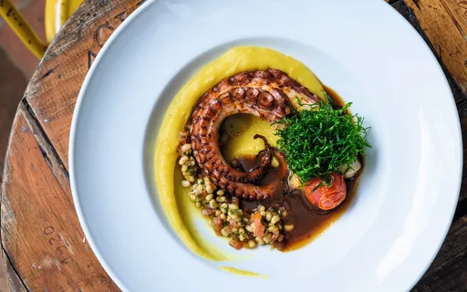

Confira nossa tabela de preços!
| Prato | Descrição | Preço |
|---|---|---|
| Polvo à Lagareiro com Batatas ao Murro | Um clássico com toques de alho e azeite. Polvo macio assado com batatas douradas. | R$ 98,00 |
| Pastéis de Polvo Crocante (4 unidades) | Pastéis crocantes recheados com polvo cremoso. Servido com maionese defumada. | R$ 32,00 |
| Risoto de Polvo com Azeitonas Pretas | Risoto cremoso com suculentos pedaços de polvo, azeitonas e um toque de limão siciliano. | R$ 85,00 |
| Polvo Grelhado com Purê de Mandioca | Tentáculos de polvo grelhados no ponto certo, servidos sobre um purê de mandioca cremoso e rústico, finalizado com molho de páprica. | R$ 95,00 |
| Salada de Polvo e Camarão | Uma opção leve e refrescante. Polvo e camarão cozidos, misturados a folhas frescas, tomate cereja e um leve molho de vinagrete de limão e ervas. | R$ 78,00 |
Sugestões do Chef
-
Polvo à Lagareiro com Batatas ao Murro
-
Salada de Polvo e Camarão
-
Polvo Grelhado com Purê de Mandioca
